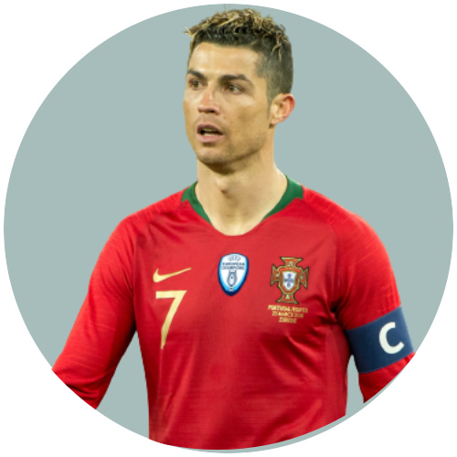

.png)


Despite months of negotiation to sign a new Real Madrid contract, on 10 July 2018, Ronaldo signed a four-year contract with Italian club Juventus after completing a €100 million transfer, which included an additional €12 million in other fees and solidarity contributions to Ronaldo's youth clubs. The transfer was the highest ever for a player over 30 years old, and the highest paid by an Italian club. Upon signing, Ronaldo cited his need for a new challenge as his rationale for departing Madrid, but later attributed the transfer to the lack of support he felt was shown by club president Florentino Pérez.
Ronaldo began his international career with Portugal under-15 in 2001. During his international youth career, Ronaldo would represent the under-15, under-17, under-20, under-21 and under-23 national sides, amassing 34 youth caps and scoring 18 goals overall. Aged 18, Ronaldo made his first senior appearance for Portugal in a 1–0 win over Kazakhstan on 20 August 2003.Ronaldo began his international career with Portugal under-15 in 2001. During his international youth career, Ronaldo would represent the under-15, under-17, under-20, under-21 and under-23 national sides, amassing 34 youth caps and scoring 18 goals overall. He was subsequently called up for UEFA Euro 2004, held in his home country, and scored his first international goal in a 2–1 group stage loss to eventual champions Greece, his eighth appearance for Portugal.